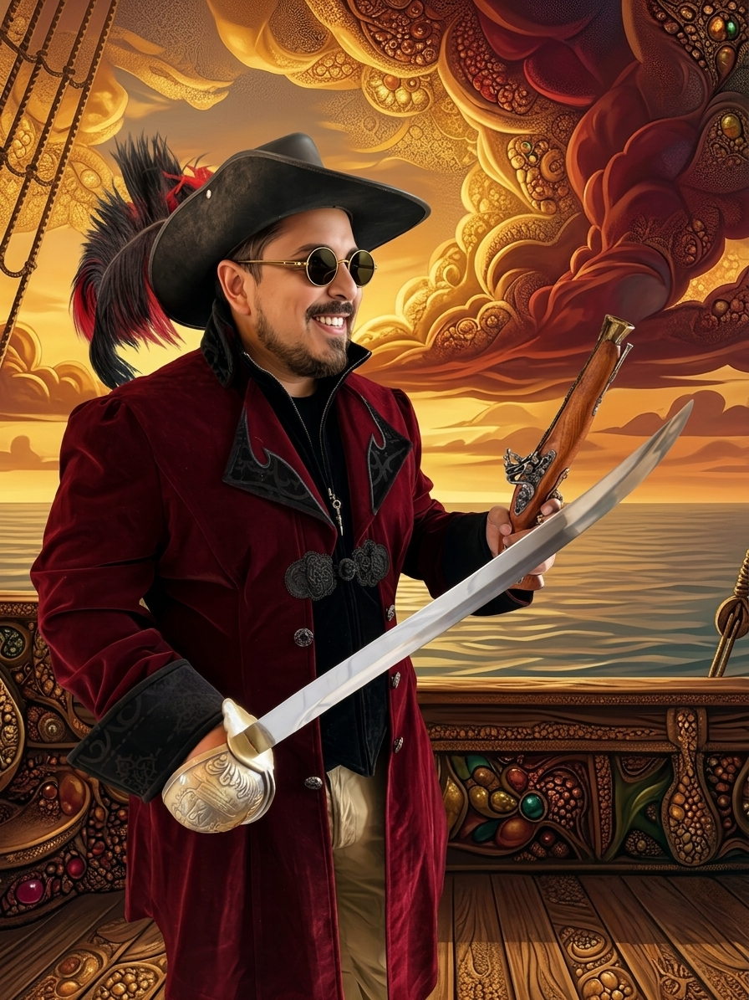

I am currently building the future of micro-mobility as a CTO at an electric scooter company. Prior to this, I spent over 15 years engineering software solutions in Big Tech.
Splitting my time between Dallas and Minneapolis, my technical focus spans across Python migrations, robust API integrations for business automation, and high-availability Linux infrastructure.